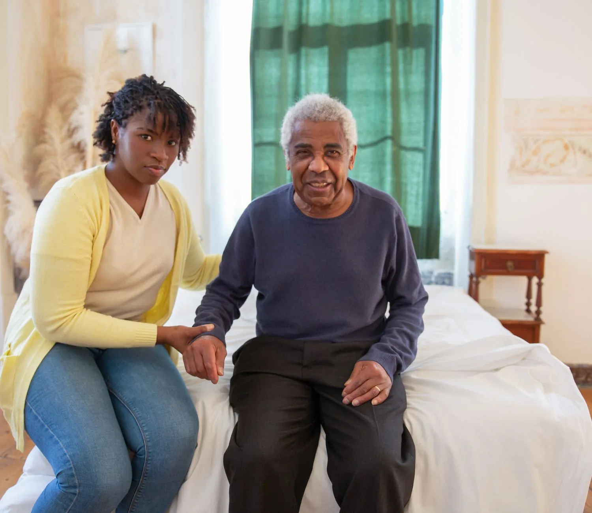

Formate para acompañar,cuidar y transformar vidas.
Cursos online de acompañamiento terapéutico, adultos mayores, autismo y vínculos. Con una mirada humana, herramientas concretas y tu tiempo respetado.

Cuatro caminos para acompañar mejor.
Elegí el área que te moviliza. Cada una tiene su propia formación, pensada desde la práctica real.
Acompañamiento Terapéutico
La formación completa para acompañar en la vida cotidiana.
Ver formación →Adultos mayores
Estimulación cognitiva y talleres de memoria.
Ver curso →Autismo (TEA)
Acompañar respetando cada forma de estar en el mundo.
Ver curso →Pareja y familia
Entender los vínculos para poder cuidarlos.
Ver curso →Formaciones para acompañar con herramientas.
Cinco propuestas online, grabadas, para hacer a tu ritmo. Elegí por área o buscá lo que necesitás.
Un recorrido simple, pensado para sostenerte.
Elegís tu curso
Por área o por lo que necesitás resolver hoy.
Aprendés a tu ritmo
Video, lecturas y ejercicios que aplicás enseguida.
Te acompañamos
Comunidad y docentes que responden tus dudas.
Recibís tu certificado
Al completar el 100%, tu certificado del instituto.
Docentes con recorrido y calidez.
Profesionales que hacen esto todos los días y que están cerca durante tu cursada.
Para quién son (y para quién no).
Es para vos si…
- Querés formarte para acompañar y cuidar a otras personas.
- Sos profesional de la salud o la educación y querés especializarte.
- Acompañás a un ser querido y buscás herramientas.
- Necesitás estudiar a tu ritmo, cuando tu semana te lo permite.
Quizás no, si…
- Buscás un título oficial habilitante (entregamos certificado propio).
- Esperás recetas mágicas en vez de un proceso de aprendizaje.
- No podés dedicarle unas horas por semana.
- Preferís teoría abstracta antes que práctica concreta.
Un aula clara, hecha para concentrarte.
Videos, materiales, tu progreso y tus notas en un solo lugar. Entrá con el modo demostración y miralo por dentro.
- Marcás cada clase como completada
- Tu barra de progreso se actualiza sola
- Tomás notas que quedan guardadas
Lo que solés querer saber antes de anotarte.
Empezá a acompañar mejor, hoy.
Elegí un curso, entrá al aula y arrancá a tu ritmo. Con 7 días de garantía para probar sin riesgo.
Ver los cursos